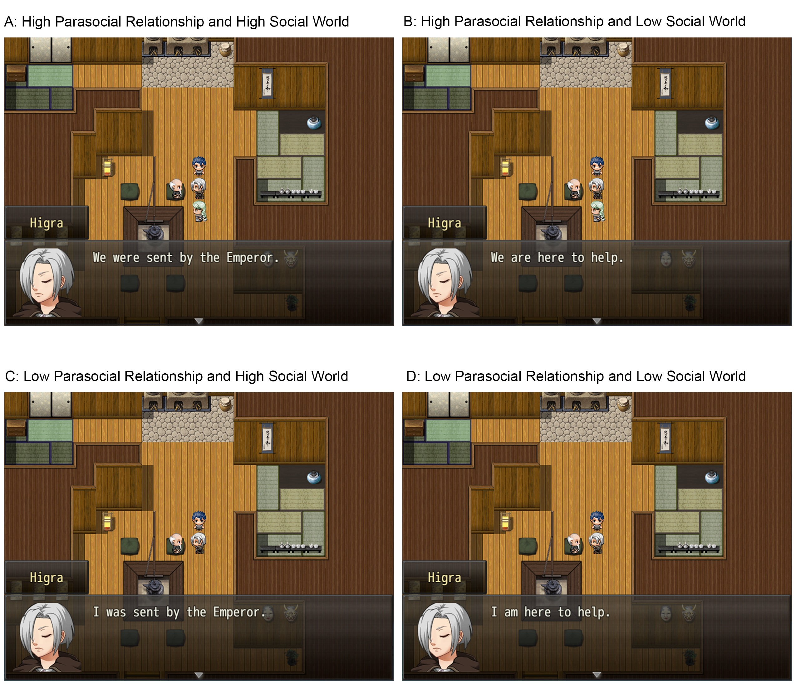
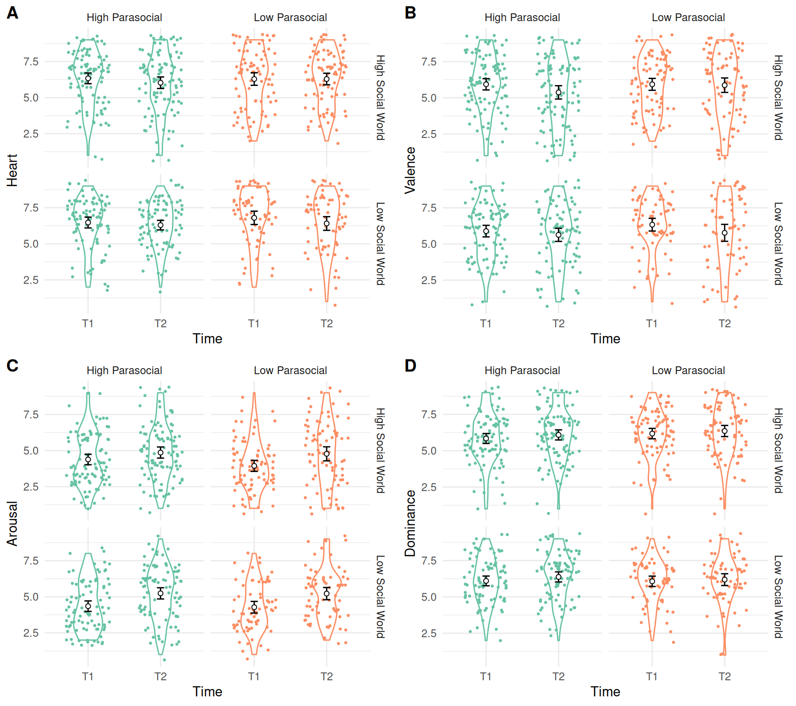

6 Study 3: Can Playing a Single-Player Video Game Replenish Belonging via Parasocial Relationships and Social Worlds?
Study 2 tested whether recalling about a time playing a social surrogacy video game can replenish belonging after social rejection. Social surrogate video games involve two distinct social surrogates, according to the social surrogacy hypothesis. First, people who write about a social surrogacy video game may experience parasocial relationships—they may have thought about emotional bonds with their favorite characters like players of the Mass Effect series report attachments to Tali and Garrus (Burgess and Jones 2020). Second, people may have experienced social worlds—they may have remembered the time they were immersed in the story and felt like being a member of the game’s social world. Although Study 2 tested that social surrogates could replenish belonging following social rejection, whether parasocial relationships, social worlds, or the combination of the two can increase belonging in single-player games remains unknown.
In Study 3, I decomposed the effects of parasocial relationships and the social world on belonging after social rejection. To do so, I developed an original game to independently manipulate the degree of parasocial relationships (high vs. low) and social worlds (high vs. low). Using a new original video game also eliminated any influence from participants’ familiarity with the game since all participants played this game for the first time. All participants first experienced social rejection and then played the video game with varying degrees of parasocial relationships and social worlds. The goal of this study was to test Hypotheses 2, 3, and 4.
I label degrees of parasocial relationships and social worlds as high vs. low, instead of present vs. absent, since people see social agency in most visual stimuli even in geometric figures (Heider and Simmel 1944; Scholl and Tremoulet 2000), and thus I cannot rule out the possibility that people do not experience parasocial relationships or social worlds.
6.1 Method
6.1.1 Sample Size Rationale
No estimate for the effect size for this study is available, and thus I used the safeguarded effect size in Study 2 as the target effect size (d = 0.35). The current study was a 2 (Parasocial Relationships: High vs. Low) x 2 (Social Worlds: High vs. Low) between-subjects design. I followed a recommendation to base the patterns of group mean differences to estimate an effect size (Lakens and Caldwell 2019). For the current power analysis, I treated Cohen’s d as the differences in the group means by assuming the pooled standard deviation of 1. I used the Superpower R package to perform power analysis (Lakens and Caldwell 2019).
Since the main goal of the study was to test the effects of parasocial relationships and social worlds on belonging, I calculated the required sample size based on the main effect of each. I assumed that the main effects of the parasocial relationship manipulation and the social world manipulation would each have an effect size of d = 0.35 (Hypotheses 2 and 3). The resulting target sample size to achieve .90 power and .05 alpha is 344 participants in total (86 per condition x 4 conditions). This sample size is enough to detect d = 0.50 with .90 power and .05 alpha for the ancillary Hypothesis 4 (86 per group). See Figure 6.1 for the expected pattern of the means used for the power analysis.

Note. All Cohen’s d’s are relative to the low parasocial relationship and the low social world condition (depicted as zero). The error bars represent +/-1 SD from the estimate.
6.1.2 Participants
I recruited 469 participants via the psychology participant pool at the University of Delaware. The final analytic sample size was 344 after exclusions (see Exclusions and Stopping Rule below). Among the included participants, 207 (60.17%) identified as woman, 130 (37.79%) identified as man, and 7 (37.79) identified as neither man or woman. For the racial identity, 265 (77.03%) identified as White, 39 (11.34%) as Asian, 15 (4.36%) as Black/African-American, and 25 (7.27%) as belonging to other racial category or to multiple racial categories. Participants received partial course credit for participation. Participants were eligible to participate if they have access to a computer to play the custom game on a web browser.
The current study used a novel RPG with a fictional story with dialogues with non-player characters—both important components for the parasocial relationship and social world manipulations. However, some people may dislike stories and dialogues and ignore them in their gameplay. If I recruited only participants disinterested in stories, the manipulations in this study would be ineffective simply because they are not paying attention to the manipulation. To minimize the issue, I asked prospective participants to answer the story subscale of the Gaming Attitudes, Motives, and Experiences Scale to measure people’s interests in stories in video games (Hilgard, Engelhardt, and Bartholow 2013). Then, I prioritized inviting participants with higher interests in stories for participation.
Prioritizing the participation of people who liked storytelling also increased the external validity of the study. In reality, single-player video games with social surrogates are usually role-playing games with stories and dialogues with other characters. People who regularly play these games should have interests in stories in the first place since people usually purchase and play video games they like. If I happen to only recruit participants who dislike stories, our sample would not be representative of the consumers of single-player video games with social surrogates. The results of the study has the most implications for those who are likely to play single-player video games–prioritizing their participation incrased the generality and impact of the study in the long run.
6.1.3 Procedure
Participants accessed an online study website, signed an informed consent, and completed the demographics questions. Participants also completed the baseline Heart Manikin (Time 1) and the original Self-Assessment Manikin, consistent with Study 2. To increase participants’ engagement with the study materials, I offered monetary incentives for attending to study materials. Specifically, participants were told that they would complete a pop quiz about the materials of the study at the end, and if they answered all questions right they would be entered into a drawing to receive a $10 Amazon Gift card. Then, all participants completed the social rejection essay used in Study 2.
After completing the social rejection essay, participants played a custom single-player video game, called Shadows of Gaki (Figure 6.2), developed for this study on RPG Maker MV (KADOKAWA Corporation 2015). I programmed the video game to independently manipulate parasocial relationships and social worlds. Participants spent on the average of 30.48 minutes to play the game (M = 30.48, SD = 63.69).

In this game, the player took the role of Higra, the main character who solves the mystery of a plague affecting the village of Azmar. I set the gender of the main player character as female for two reasons. First, past research showed that players adapt the characteristics of the player character and change how they play the game accordingly (called the Proteus effect)—such as killing more when playing a male character, and healing more when playing a female character (Yee et al. 2011). I held the gender of the player character constant in my game to avoid any influence from the Proteus effect. Second, women tend to prefer a female character over a male character whereas men do not have preferences (Paik and Shi 2013; Ratan et al. 2019). Thus, both female and male participants would like playing a female player character. For these reasons, I held the gender of the player character female for all participants.
The contents presented in this single-player game varied depending on the experimental conditions. I manipulated the parasocial relationships via the presence of the companion non-player character Sashu. In the high parasocial relationship condition, the player had an opportunity to form a parasocial relationship with Sashu. Sashu guided the player throughout the gameplay and healed the player during the battles if the player’s hit point was low. In the low parasocial relationship condition, Sashu was not present in the gameplay.
I manipulated the social worlds via the opportunities for immersing into the story of the video game, and thus facilitating the collective assimilation (Gabriel and Young 2011; Gabriel and Valenti 2017). In the high social world condition, the player was presented the story of Higra answering the Emperor’s call to be a Samga in the hopes of reuniting with Mother. In the low social world condition, the player was not presented with these storytelling components. After playing the video game, participants completed the Heart Manikin and the original Self-Assessment Manikin again (Time 2). Then, participants indicated whether they interacted with the non-player characters in their essay (Yes or No). If the answer was Yes, they first named the character that they felt most connected to (“Thinking about the non-player characters [NPCs] that you interacted with, whom did you feel most connected to?”), and they completed the modified Inclusion of Self in Other Scale (Aron, Aron, and Smollan 1992). Then, participants completed the modified Single-Item Immersion Scale (Reysen et al. 2019). Then, participants will complete the modified Single-Item Immersion Scale (Reysen et al. 2019), the on-the-fly measure of social world, and the Enjoyment Subscale of the Game User Experience Satisfaction Scale [GUESS; Phan, Keebler, and Chaparro (2016)]. Lastly, participants completed the identification subscale of the player character identification scale (Van Looy et al. 2012), the attention check items, the questions for the raffle items, and the open-ended debriefing questions.
6.1.4 Measures
The Heart Manikin and the modified Inclusion of Ingroup in the Self Scale for gamer identification (Tropp and Wright 2016) were identical to the ones used in Study 2. I modified the language of the Inclusion of Self In Other Scale (Aron, Aron, and Smollan 1992) used in Study 2 to measure parasocial relationships with the characters of the custom video game. Similarly, I modified the language of the Single-Item Immersion Scale (Reysen et al. 2019) and the on-the-fly measure of social worlds to measure the degrees of immersion and social world while playing the custom video game. I also modified the language of the Enjoyment Subscale of the Game User Experience Satisfaction Scale to refer to the game that participants just played (e.g., “I thought the game was fun”). Cronbach’s alphas for the current sample were 0.92 for the Enjoyment Subscale of the Game User Experience Satisfaction Scale, and 0.86 for the on-the-fly measure of social world.
Player Character Identification - Similarity Subscale. I used the identification similarity subscale from the Player Character Identification Scale (Van Looy et al. 2012). The subscale consisted of 6 statements on the similarities between the player and the player character (e.g., “My character is like me in many ways”). I modified the scale so that they refer to the video game in the study (e.g., “My character was like me in many ways”). Cronbach’s alpha for the current sample was 0.96. I treated this scale as exploratory and thus do not pre-register any analyses.
Attention Check. Consistent with Study 2, participants were asked about the nature of the first essay: “In today’s study, you were asked to write an essay. What were you asked to write about?” Participants could answer this question as “about a time I felt rejected”, “about a time I felt accepted”, and “about my morning yesterday”. I marked participants as failing the attention check if they indicate that they were asked to write about a time they felt accepted or about their morning yesterday.
For checking participants’ attention to the parasocial relationship manipulation, I asked participants, “What was the name of the non-player character who followed you throughout the gameplay?”. The answer choices were, “Sashu”, “Akiko” (filler), and “None—I did not have anyone who followed me throughout the game”. I marked the following participants as failing the attention check: participants in the higher parasocial relationship condition who report “Akiko” or “None”, and participants in the lower parasocial relationship condition who report “Sashu” or “Akiko”. For checking the social world manipulation, I asked participants, “What was the story presented in the game?”. Answer choices were (a) “Higra answered the emperor’s call and became a Samga, fighting for good, defeating the evil boss and reuniting with her mother at the end”, (b) “Higra prepared a special dish for grandma’s birthday” (Filler), (c) “Higra battled evil bosses throughout the game, eventually winning, but did not reunite with her mother at the end.”. I marked the following participants as failing the attention check: participants in the higher social worlds condition who answered (b) or (c), and participants in the lower social worlds condition who answer (a) or (b).
6.1.5 Exclusion and Stopping Rule
I excluded any participants who fail to complete the entire study procedure or fail the attention check. Eighteen participants failed the essay attention check, 75 participants failed the parasocial relationships attention check, and 60 participants failed the social world attention check. In total, I excluded 125 participants for failing one or more of the three attention checks. I also excluded one participant who stopped the study for more than 4 days while playing the game. I continued recruiting participants until the sample size after exclusions reached the target sample size.
6.1.6 Deviations from the Proposal
I proposed to use the Parasocial Interaction—Process Scale (Schramm and Hartmann 2008) and the modified Narrative Engagement Scale (Busselle and Bilandzic 2009). After testing the study, I found that the entire study was taking longer than anticipated. To reduce the time of participation, I decided to remove these two scales. Then, participants completed the modified Single-Item Immersion Scale (Reysen et al. 2019), the modified Narrative Engagement Scale (Busselle and Bilandzic 2009), the on-the-fly measure of social world, and the Enjoyment Subscale of the Game User Experience Satisfaction Scale [GUESS; Phan, Keebler, and Chaparro (2016)].
Initially, the answer choices for the social world were (a) “Higra answered the Emperor’s call to be a Samga and reunited with Mother”, (b) “Higra prepared a special dish for grandma’s birthday” (Filler), and (c) “None—I did not see any story in the video game”. After recruiting 19 participants, I saw that many participants in the lower social world condition still answered seeing a story (a) rather than seeing none (c). I speculated that some participants in the lower social condition may have imagined their own story while playing the game, thus not choosing (c). To prevent this issue, I changed the answer choices to (c) “Higra battled evil bosses throughout the game.” After recruiting another 247 participants, I still saw that this issue persisted. I further changed the answer choices to (a) “Higra answered the emperor’s call and became a Samga, fighting for good, defeating the evil boss and reuniting with her mother at the end” and (c) “Higra battled evil bosses throughout the game, eventually winning, but did not reunite with her mother at the end.” Two hundred and three participants completed this final version.
6.2 Results
Main Analysis. I ran a 2 (Parasocial Relationships: High vs. Low) x 2 (Social Worlds: High vs. Low) ANOVA on the Heart Manikin scores at Time 2. Contrary to the predictions, I did not observe the main effect of the parasocial relationships (Hypothesis 2; F(1, 340) = 0.87, p = .353), and the main effect of the social worlds (Hypothesis 3; F(1, 340) = 0.94, p = .333). Similarly, I also did not observe the Parasocial Relationships x Social Worlds interaction effect (F(1, 340) = 0.12, p = .726). As a planned contrast, I compared the belonging scores of those in the Low Parasocial Relationships and Low Social Worlds condition to those in the High Parasocial Relationships and High Social Worlds condition to test Hypothesis 4. Results did not show a difference in Heart Manikin Scores at Time 2 (t = -1.29, p = .568, d = -0.20, 90%CI [-0.46, 0.06]; Figure 6.3 A).
Since the obtained p-values were greater than .05 for the analyses for Hypotheses 2, 3, and 4, I performed the two one-sided test of equivalence, consistent with the procedure in Study 2 (Lakens, 2017). Again all effect sizes smaller than |d| = 0.35 are considered theoretically equivalent to zero. The 90% confidence intervals fell within the SESOI for the main effect of the parasocial realationships (d = -0.05, 90%CI [-0.20, 0.11]) and the main effect of social world (d = -0.09, 90%CI [-0.24, 0.06]). The Cohen’s d contrasting the High Parasocial-High Social World and the Low Parasocial-Low Social World contained the SESOI, and thus the results were ambiguous (d = -0.20, 90%CI [-0.46, 0.06]; Figure 6.3 B). These results suggest that the main effects of parasocial relationships and social world were theoretically equivalent to zero.
Exploratory Manipulation Check. To explore the effectiveness of the parasocial relationship manipulation, I again used the procedure in Study 2 to code the participants into three groups: “did not interact with non-player characters” (Group 1), “interacted with non-player characters but did not form parasocial relationships” (Group 2)“, and”interacted with non-player characters and formed parasocial relationships” (Group 3). Then, I ran a two-way chi-square test (Parasocial Relationships: High vs. Low x Groups: 1, 2, vs. 3) to examine whether those in the social surrogacy essay condition (vs. the non-social surrogacy condition) indicated they interacted with NPCs (Group 2) and formed parasocial relationships (Group 3) more, rather than they did not interact with non-player characters (Group 1). Results did not show any differences in forming parasocial relatioships between the Higher vs. Lower Parasocial Relationships conditions (X2(2, N = 344) = 0.71, p = .699; Figure 6.4 A).
To explore the effectiveness of the social world manipulation, I ran Welch’s t-test to compare the scores of the Single-Item Immersion Scale (Reysen et al., 2019) and the on-the-fly measure of social world between the High vs. Low social worlds conditions. Results showed that participants in the Higher Social World condition reported similar levels of immersion and social world compared with those in the Lower Social World condition (for immersion, t(331.0) = -0.39, p = .700, Figure 6.4 B; for social world measure, t(334.4) = 1.30, p = .193, Figure 6.4 C).
Overall the results of the exploratory manipulation check suggested that the manipulations may not have affected the target constructs. As planned, I treat the analyses as exploratory, and do not conclude the effectiveness of the manipulation based on these analysis.
Enjoyment Across Conditions. I explored whether participants reported different levels of enjoyment after playing the video game across the condition using a 2 (Parsocial: Higher vs. Lower) x 2 (Social World: Higher vs. Lower) ANOVA on enjoyment scores. Results showed no main effect of Parasocial Relationships (F(1, 338) = 1.08, p = .299), no main effect of Social World (F(1, 338) = 0.32, p = .573), and no 2-way interaction bweten Parasocial Relationships and Social World (F(1, 338) = 0.23, p = .633) on enjoyment scores. Thus, participant’s enjoyment did not differ depending on the parasocial relationships content or the social world content in the video game.
Exploratory Moderation Analysis. I explored whether the gender or race of participants moderated the effect of the parasocial relationships and the social worlds on belonging using regression models. For each demographic characteristic, I constructed a regression model predicting belonging with the following predictors: Parasocial Relationships (.5 = high, -.5 = low), Social Worlds (.5 = high, -.5 = low), Gender (.5 = female, -.5 = male) or Race (four dummy variables representing: American-Indian, African American/Black, White/Caucasian, Asian, Pacific Islander, and other), and their fully-crossed interaction terms. For the moderation anaysis with gender, I did not find the main effects (Parasocial Relationships: B = -0.14, SE = 0.19, t = -0.78, p = .438, Social World: B = -0.19, SE = 0.19, t = -1.00, p = .317, Gender: B = -0.19, SE = 0.19, t = -1.00, p = .317), the 2-way interactions (Parasocial Relationships x Gender: B = 0.05, SE = 0.37, t = 0.13, p = .897; Social World x Gender: B = 0.15, SE = 0.37, t = 0.39, p = .696), or the 3-way interaction among Parasocial Relationship, Social World, and Gender (B = -0.53, SE = 0.75, t = -0.71, p = .479). For the moderation analysis with race, I did not find the main effects, the 2-way interactions (Parasocial relationships x Social World, Parasocial Relationships x Race, or Social World x Race), or the 3-way interaction (Parasocial Relationships x Social World x Race). Note that only few participants identified as non-White, and thus I was not able to properly test the moderation by race in this study. Overall, these results suggest that the effects of the parasocial relationship or social world were not moderated by gender or racial identities.
6.2.1 Unplanned Analyses
Exploratory Analyses on Manikin Measures across Time and Condtiions Similar to Study 2, I probed whether participants reported different levels of Heart, Valence, Arousal, and Dominance Manikin scores using a 2 (Parasocial Relationship: Higher vs. Lower) x 2 (Social World: Higher vs. Lower) x 2 (Time: 1 vs 2) mixed-ANOVAs. Across the outcomes, there were no main effect of parasocial realationship (Heart: F(1, 340) = 0.75, p = .386, \(\eta^2_{G}\) = .002; Valence: F(1, 340) = 2.06, p = .152, \(\eta^2_{G}\) = .004; Arousal: F(1, 340) = 0.82, p = .366, \(\eta^2_{G}\) = .002; Dominance: F(1, 338) = 0.39, p = .531, \(\eta^2_{G}\) < .001) and no main effect of social world (Heart: F(1, 340) = 1.92, p = .167, \(\eta^2_{G}\) = .005; Valence: F(1, 340) = 0.47, p = .492, \(\eta^2_{G}\) < .001; Arousal: F(1, 340) = 2.65, p = .105, \(\eta^2_{G}\) = .006; Dominance: F(1, 338) = 0.20, p = .658, \(\eta^2_{G}\) < .001). Also, I foud no 2-way Parasocial Relationship x Social World interaction (Heart: F(1, 340) = 0.10, p = .758, \(\eta^2_{G}\) < .001; Valence: F(1, 340) = 0.01, p = .904, \(\eta^2_{G}\) < .001; Arousal: F(1, 340) = 0.41, p = .523, \(\eta^2_{G}\) < .001; Dominance: F(1, 338) = 1.71, p = .192, \(\eta^2_{G}\) = .004), no 2-way Parasocial Relationship x Time interaction (Heart: F(1, 340) = 0.07, p = .786, \(\eta^2_{G}\) < .001; Valence: F(1, 340) = 0.13, p = .719, \(\eta^2_{G}\) < .001; Arousal: F(1, 340) = 0.87, p = .352, \(\eta^2_{G}\) < .001; Dominance: F(1, 338) = 0.35, p = .554, \(\eta^2_{G}\) < .001), no 2-way Social World x Time interaction (Heart: F(1, 340) = 0.62, p = .433, \(\eta^2_{G}\) < .001; Valence: F(1, 340) = 0.15, p = .701, \(\eta^2_{G}\) < .001; Arousal: F(1, 340) = 1.39, p = .239, \(\eta^2_{G}\) < .001; Dominance: F(1, 338) = 0.01, p = .940, \(\eta^2_{G}\) < .001), or no 3-way Parasocial Relationship x Social World x Time interaction (Heart: F(1, 340) = 2.30, p = .131, \(\eta^2_{G}\) < .001; Valence: F(1, 340) = 2.27, p = .133, \(\eta^2_{G}\) = .002; Arousal: F(1, 340) = 0.47, p = .495, \(\eta^2_{G}\) < .001; Dominance: F(1, 338) = 0.07, p = .788, \(\eta^2_{G}\) < .001). However, there was a consistent Time effect across the models. At Time 2, Participants reported lower belonging (Time 1: M = 6.45, SD = 1.90; Time 2: M = 6.24, SD = 1.87; F(1, 340) = 6.62, p = .011, \(\eta^2_{G}\) = .003), lower valence (Time 1: M = 6.00, SD = 1.91; Time 2: M = 5.64, SD = 2.30; F(1, 340) = 7.26, p = .007, \(\eta^2_{G}\) = .007), higher arousal (Time 1: M = 4.24, SD = 1.76; Time 2: M = 5.01, SD = 1.97; F(1, 340) = 51.70, p < .001, \(\eta^2_{G}\) = .042), and higher dominance (Time 1: M = 6.04, SD = 1.63; Time 2: F(1, 338) = 4.89, p = .028, \(\eta^2_{G}\) = .004) compared with the baseline (Time 1).

Player Character Identification. I explored whether participants reported different levels of identifications with the player characters across the higher vs. lower parasocial and social world conditions in a 2 (Parasocial Relationships: Higher vs. Lower) x 2 (Social World: Higher vs. Lower) ANOVA. Results showed that all terms were null (the parasocial relationships main effect: F(1, 311) = 1.80, p = .181, the main effect of social world: F(1, 311) = 0.06, p = .803; the interaction between parasocial relationships and social world: F(1, 311) = 0.34, p = .561). These results suggest that participants reported similar levels of identification with the player character (Higra) across the conditions.
Moderation by Parasocial Relationships, Social World, Enjoyment, and Player Character Identification. I explored whether measures of parasocial relationship, social world, or enjoyment moderated the effects of the social surrogacy essay manipulation on Heart Manikin a series of mixed models. I constructed a mixed model for each moderator variable (the manipulation check groups (Groups 1-3), Inclusion of the Other in Self Scale, Single-Item Immersion Scale, and the On-The-Fly Measure of Social World, the Enjoyment Scale, and the Player Character Identification Scale) Thus, each model contained the following fixed predictors: the moderator, Parasocial Relationships (higher vs. lower), Social World (higher vs. lower), Time, the 2-way Moderator x Parasocial Relationships, the 2-way Moderator x Social World interaction, the 2-way Time x Parasocial Relationships, and the 2-way Time x Social World interaction, the 3-way Moderator x Parasocial Relationships x Social World interaction, and the 3-way Parasocial Relatioships x Social World x Time. (Figure 6.5) Below, I only report positive results (p < .05) for the heart manikin here for brevity. Note that these results were not preregistered and thus prone to Type I error.
Across all the models, I observed a main effect of time such that participants reported lower Heart Manikin scores at Time 2 than Time 2, consistent with the prior analysis.
For the analysis treating parasocial relationship group as a moderator, I found the three-way interaction among parasocial relationships condition, social world condition and time (B = 0.13, SE = 0.06, t = 2.06, p = .040; Figure 6.5, Panel A). However, follow-up tests showed that the group means were not different from each other.
For the analysis treating the Inclusion of the Other in Self as a moderator, I found the main effect of the Inclusion of the Other in Self scores (B = 0.13, SE = 0.06, t = 2.10, p = .036; Figure 6.5, Panel B). These results suggest that participants with higher Inclusion of the Other in Self scores reported higher Heart Manikin sores across conditions and time.
For the analysis treating the Single-Item Immersion scale as a moderator, I found the main effect of the immersion scores, such that participants reporting higher immersion also reported higher belonging (B = 0.23, SE = 0.05, t = 4.61, p < .001; Figure 6.5, Panel C). I found the two-way Immersion x Parasocial Relationship Condition effect ( B = -0.11, SE = 0.05, t = -2.16, p = .031). Follow-up tests suggested that the relationship between immersion and belonging was greater in the low parasocial relationship condition than in the high parasocial relationship condition (Low Parasocial Relationship Condition: B = 0.34, SE = 0.07, 95%CI[0.19, 0.48]; High Parasocial Relationship Condition: B = 0.12, SE = 0.07, 95%CI[-0.01, 0.25]). I also found the two-way Immersion x Time effect (B = -0.11, SE = 0.02, t = -4.86, p < .001). Follow-up tests showed that the slope of immersion scores predicting belonging was greater at Time 2 than Time 1 (Time 1: B = 0.12, SE = 0.05, 95%CI[0.01, 0.23]; Time 2: B = 0.34, SE = 0.05, 95%CI[0.23, 0.45]). I also found the four-way Immersion x Parasocial Relationship x Social World x Time interaction (B = -0.07, SE = 0.02, t = -3.25, p = .001). Follow-up tests suggested that, among the high parasocial and high social world condition, the relationship between immersion and belonging was greater at Time 2 than Time 1 (Time 1: B = -0.03, SE = 0.10, 95%CI[-0.23, 0.16]; Time 2: B = 0.35, SE = 0.10, 95%CI[0.16, 0.55]).
For the analysis treating the On-the-Fly Measure of Social World (OTF Social World) as a moderator, I found the main effect of the On-the-Fly Measure of Social World, such that participants reporting higher scores of social world also reported higher belonging (B = 0.29, SE = 0.06, t = 4.83, p < .001; Figure 6.5, Panel D). I also found the main effect of social world, such that participants in the high social world condition reported lower belonging than those in the low social world condition (B = -0.18, SE = 0.09, t = -1.97, p = .048). I also observed the two-way OTF Social World x Time interaction (B = 0.10, SE = 0.04, t = 2.41, p = .016). Follow-up tests suggested that the relationship between the social world scores and belonging was greater at Time 2 than at Time 1 (Time 1: B = 0.18, SE = 0.07, 95%CI[0.05, 0.31]; Time 2: B = 0.41, SE = 0.07, 95%CI[0.28, 0.54]). Finally, I found the four-way Parasocial Relationships x Social World x OTF Social World x Time interaction (B = -0.06, SE = 0.03, t = -2.04, p = .042). Follow-up tests suggested that, in the high parasocial and high social world condition, the relationship between OTF Social World scores and belonging was greater at Time 2 than at Time 1 (Time 1: B = 0.03, SE = 0.12, 95%CI[-0.20, 0.26]; Time 2: B = 0.47, SE = 0.12, 95%CI[0.24, 0.70]).
For the analysis treating the enjoyment as a moderator, I found the main effect of enjoyment, such that participants with higher scores of enjoyment reported higher belonging (B = 0.18, SE = 0.06, t = 3.11, p = .002; Figure 6.5, Panel E). I also found the 2-way Enjoyment x Time interaction (B = -0.15, SE = 0.02, t = -5.92, p < .001). Follow-up tests suggested that the relationship between enjoyment and belonging was greater at Time 2 than at Time 1 (Time 1: B = 0.03, SE = 0.06, 95%CI[-0.09, 0.15]; Time 2: B = 0.32, SE = 0.06, 95%CI[0.20, 0.44]). I also observed the four-way Enjoyment x Parasocial Relationships x Socail World x Time interaction (B = -0.08, SE = 0.02, t = -3.09, p = .002). Follow-up tests showed that, in the low parasocial and low social world condition, the relationship between enjoyment and belonging was greater at Time 2 than at Time 1 (Time 1: B = -0.02, SE = 0.12, 95%CI[-0.25, 0.21]; Time 2: B = 0.39, SE = 0.12, 95%CI[0.16, 0.62]). The relationship between enjoyment and belonging in the low parasocial and low social world at Time 2 was also greater than the relationship between enjoyment and belonging in the high parasocial and low social world condition at Time 1 (B = 0.39, SE = 0.12, 95%CI[0.16, 0.62] vs. B = -0.10, SE = 0.13, 95%CI[-0.34, 0.15]).
Lastly, for the analysis treating the identification with the player character as a moderator, I found the main effect of the player character identification, such that participants who identified more with the player character reported higher belonging across conditions and time (B = 0.35, SE = 0.10, t = 3.51, p < .001; Figure 6.5, Panel F). I also found the main effect of Social World, such that participants in the High Social World condition reported lower belonging (B = -0.19, SE = 0.09, t = -2.02, p = .044). The two-way player character identification x Parasocial Relationships was greater than zero (B = -0.30, SE = 0.10, t = -2.99, p = .003). Follow-up tests suggested that the relationship between player character identification and belonging was greater in the low parasocial condition than in the high parasocial condition (low parasocial condition: B = 0.65, SE = 0.15, 95%CI[0.36, 0.95]; high parasocial condition: B = 0.05, SE = 0.13, 95%CI[-0.21, 0.32]). I also found the two-way Player Character Identification x Time interaction (B = -0.15, SE = 0.05, t = -3.27, p = .001). Follow-up tests suggested that the relationship between player character identification and belonging was stronger at Time 2 than at Time 1 (Time 1: B = 0.20, SE = 0.11, 95%CI[-0.02, 0.42]; Time 2: B = 0.51, SE = 0.11, 95%CI[0.29, 0.72]).
Bivariate Correltion Analysis. I explored associations among the measured variables via bivariate correlations. I only report select positive associations here. For the full correlation matrix, see Table 3 in [Appendix]. Note that these analyses were not planned a priori, and prone to Type I error. At Time 2, participants with higher Heart Manikin scores reported higher parasocial relatioships, immersion, social world, player character identification, and enjoyment, compared with those with lower Heart Manikin scores. Measures of parasocial relationships, immersion, social world, player character identification, and enjoyment were positively correlated with each other.
6.3 Discussion
In Study 3, I tested whether playing a video game with higher parasocial relationships and higher social worlds could increase belonging following social rejection (Hypotheses 2, 3, and 4). Results did not support these hypothesis. Rejected participants reported similar levels of belonging regardless of the levels of exposure to the parasocial relationships content and the social world content in the video game. The current null results imply many possibilities: (a) failure of manipulating parasocial relationships and social worlds, (b) failure of inducing social rejection, (c) time passed from social rejection simply recovering belonging, and (d) stressors and distractions during the COVID-19 pandemic reducing the effectiveness of the rejection induction and the social surrogacy manipulations.
Failure of Manipulating Parasocial Relationships and Social Worlds We can possibly attribute the current results to ineffective manipulations for the parasocial relationships and social worlds. Results of the exploratory manipulation check supports this notion. Regardless of their parasocial condition, participants reported similar levels of experiencing parasocial relationships. Similarly, participants reported similar levels of social world regardless of the social world conditions (higher vs lower). As planned, I refrain from making a conclusion about the effectiveness of the manipulations since the manipulation check measures were not validated to measure parasocial relationships and social worlds, as mentioned previously. Still, these null results highlight the possibility of the failure of the manipulations.
In retrospect, a better approach would have been to validate the effectiveness of the video game manipulation with the social world. That said, these measures have never been used to validate the effectiveness of a manipulation for parasocial relationships and social world, and thus the true effectiveness of the current manipulation remains ambiguous. Future studies should develop effective measures of prosocial relationships and social world, and then use them to validate manipulations.
Failure of Inducing Social Rejection. Consistent with the possibility discussed in Study 2, the rejection manipulation could have been ineffective to begin with, and thus the current study failed to capture any effects of recovering belonging. Again, I suggest that this possibility is unlikely since the rejection manipulation was shown to be effective, as discussed in Study 2.
Time from Rejection Induction Participants played the video game on the average of 30.48 minutes (M = 30.48, SD = 63.69). One possibility is that all participants replenished their belonging while playing the video game, regardless of their parasocial relationships and social world content. If this is the case, participants would report similar levels of belonging before writing the rejection essay and after playing the video game. However, the results do not support this notion. Instead, participants felt less belonging after playing a game (Time 2) than their baseline (Time 1). I cannot conclude whether passage of time replenished everyone’s belonging based on the current results.
Negative Effect of Video Game on Belonging. One possibility remains that the video game had a negative, not a positive, effect on belonging. Again, participants reported lower belonging after playing the video game (Time 2) than baseline. I speculate two possibilities for the lowered belonging: (a) frustrations in playing a new game, and (b) fighting with enemies.
I speculate that some participants may have experienced frustrations in completing the game (e.g., difficulty in controls) since everyone played the game for the first time. As a result, participants may have experienced lowered sense of control. Since people with lowered sense of control can experience lowered belonging, participants who experienced difficulty playing the game could have experienced lowered sense of belonging (Williams 2009).
I also speculate that the battles in the game may have had an adverse influence to a sense of belonging. The role-playing games on the market usually contain contents of fighting against enemies. Thus, I included battles in the game to make the current video game representative of other games on the market. However, battles involve defeating monsters and key enemy figures, akin to aggressive, antisocial behaviors that usually reduce belonging. Some participants may have found it aversive to defeat enemies in the game, especially if they liked the enemy characters, eventually lowering their sense of belonging.
Participants Meta-Experience of the Study due to Pandemic. Participants in the current study participated in the study online during the COVID-19 pandemic (participation date ranging from March, 2021 to April, 2021). One possibility of the null result can be that the basal stresses and social isolation during the pandemic is so prominent that the social surrogacy manipulation deemed ineffective, resulting in everyone feeling rejected regardless of the exposure to social surrogacy. Another possibility is that these pandemic-related stresses distracted participants from paying attention in the game, resulting in ineffective manipulations of parasocial relationships and social worlds. Although I excluded any participants who failed attention check, these pandemic-related stresses and distractions might have made participants less affected by the social surrogacy presented in the manipulations. Overall, I suggest that we interpret the current results with a caveat that the data collection happened during a global pandemic.
Overall, results of Study 3 suggested that rejected participants did not replenish belonging after playing a video game, regardless of their content of parasocial relationships or social world. These results are inconsistent with the social surrogacy hypothesis suggesting that parasocial relationships and social world can replenish belonging. I speculate that the inconsistencies might stem from the failure of manipulation social surrogacy (parasocial relationships and social world), the failure of social rejection, time from rejection experience, the video game’s negative effect on belonging, and the participants’ experience of the study due to the COVID-19 pandemic.